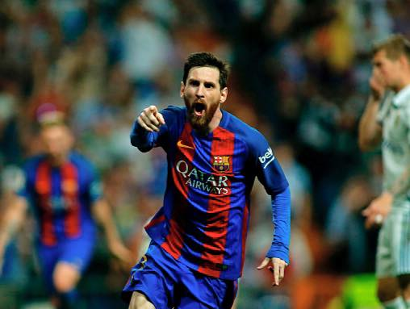

Messi chính là người hùng của Barcelona trong trận chiến với Real Madrid cuối tuần qua. Bàn thắng quyết định ở phút 92 của El Pulga đã cứu vãn cả mùa giải cho Barcelona và mở ra hy vọng vô địch của CLB.
Sau vòng 33 La Liga, Barcelona đang tạm dẫn đầu trên BXH với 75 điểm, bằng điểm với Real Madrid nhưng hơn hiệu số đối đầu (Real Madrid vẫn còn 1 trận chưa đá).
Trong bối cảnh đó, Messi đã vô cùng hạnh phúc. Tiền đạo này đã viết những lời thách thức Real Madrid trên trang Facebook cá nhân.
Siêu sao người Argentina viết: “Chúng tôi đã tới Bernabeu với nhiệm vụ giành chiến thắng, để cạnh tranh chức vô địch La Liga. Vẫn còn một chặng đường dài phía trước, nhưng chúng tôi đã rời khỏi Bernabeu với niềm vui vì đã có bước tiến quan trọng”.